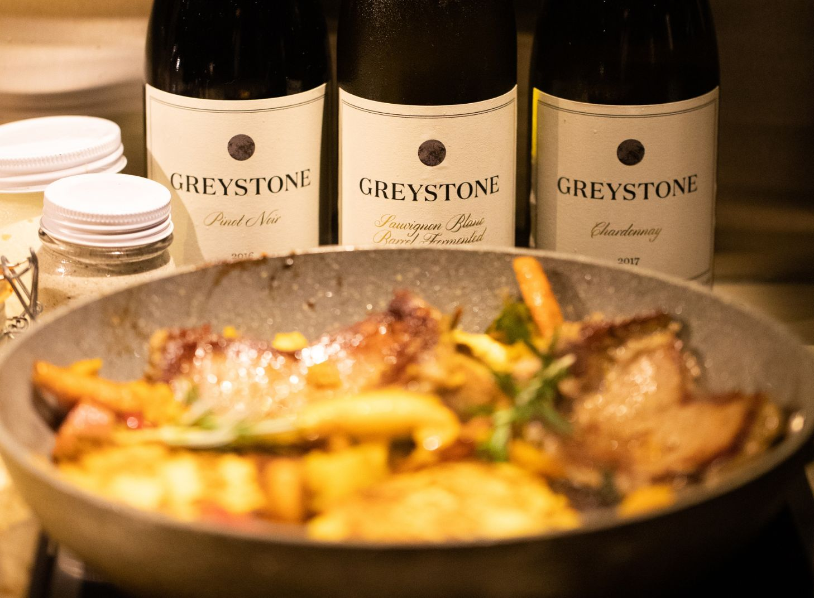

Living the Vineyard — Greystone, Waipara
PurePod Greystone sits within a working, award-winning vineyard, offering an immersive way to experience Waipara wine country. Surrounded by vines and raised above the valley, the stay is shaped by light, the seasons and the quiet rhythm of vineyard work.
A setting where productive landscape and rural calm meet.
→ Explore Greystone Wines